| 日付 | 2010年1月9日（土） |
|---|---|
| 山域 | 箱根 |
| メンバー | 友人（男1女1） |
| 山行形態 | 日帰り |
| アクセス | 電車 |
| ルート (Map) | 足柄駅→足柄峠→矢倉岳→二十一世紀の森→山北駅 |
今年の初登りは矢倉岳。昨年の春に一度訪れた山だ。
比較的簡単に登れて、展望もすばらしい山ということで人気がある。
今回は前回とは違うルートで歩いてみることにする。
8:46 足柄駅到着。標高330m。
朝は非常に寒くてあらゆるものが凍り付いている。
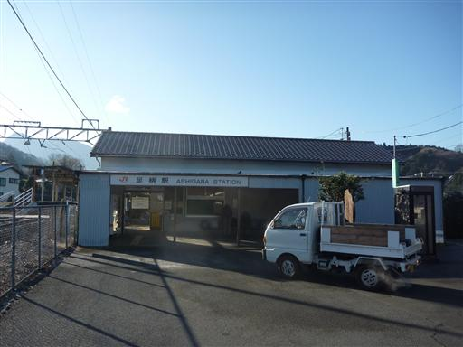
最初は車道のような広い道を歩いていく。神社があったので寄って行く。
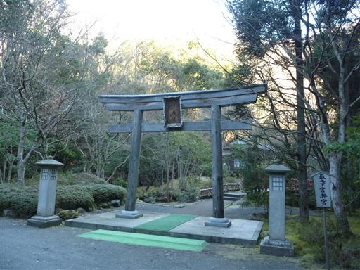
奥に2体の神様が祀られている。小さな神社だがよく整備されている。
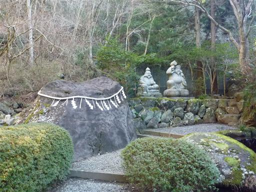
頼光対面の滝。なかなか立派な滝だ。
この辺りは足柄古道と呼ばれていて、名所旧跡がたくさんある。
以前下りに使ったときは、全く気がつかなかった。
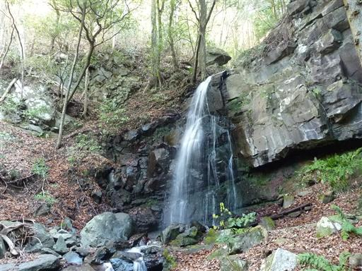
銚子ヶ渕。自然にできた渕だろうか？非常に美しい。

登山道から「←虎御前石 0.5km」と書かれていたので行ってみることにする。
しかし辿り着いて見たところ、少し大きな石が埋まっているだけ…
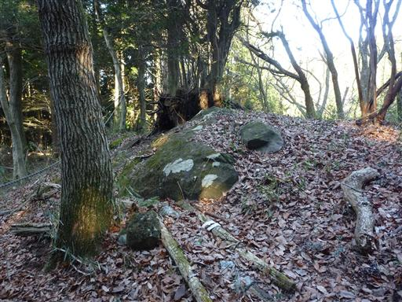
あとあと調べてみたら、どうもこれは虎御前石ではないようだ。
足元には「虎御前石」と書かれた標識が立っていたのだが…
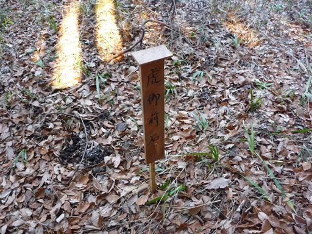
往復1kmを無駄に歩いた後で、気を取り直して先に進む。
足元に馬頭観世音像が佇んでいる。
1775年建立と書かれている。相当に古い代物だ。
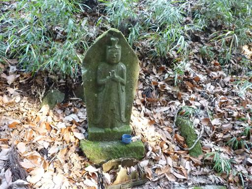
歩きやすい道を登っていくと車道と合流する。
車道脇に六地蔵と、なぜか熊のぬいぐるみが置かれている。
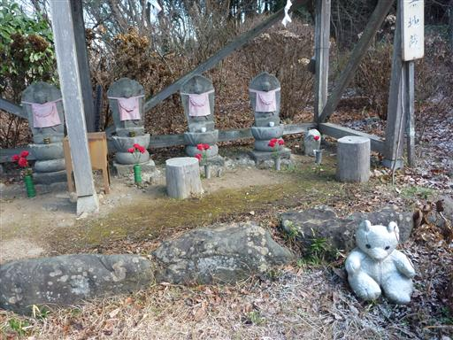
足柄峠に到着。ちらほらと観光客がいる。
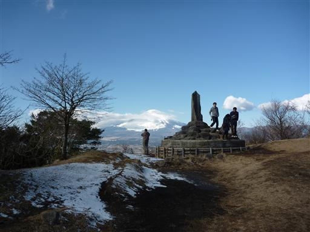
ここからは雄大な富士山が眺められる。
朝はきれいに見えていたのに、少し雲がかかり始めている。
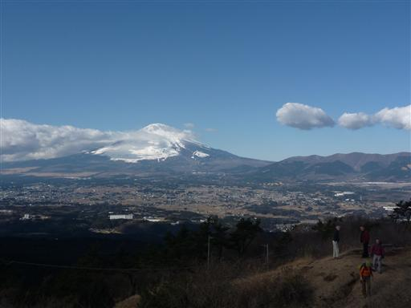
半年前にも行った、足柄山聖天堂に寄って行く。
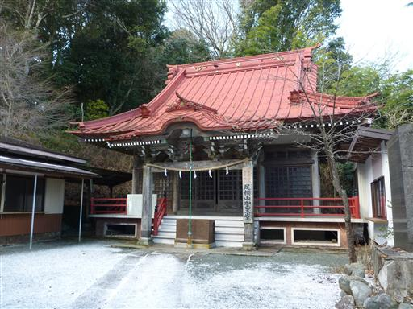
俳句短歌ポスト。造った俳句短歌を投稿できるようになっている。
きちんと回収されるのだろうか…？
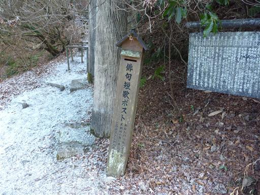
足柄峠を過ぎるとようやく登山道らしくなってくる。
先のほうに矢倉岳の丸い頭が見える。
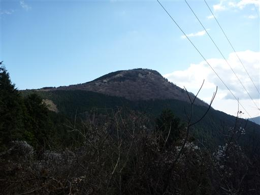
山頂直下は少し急坂が続く。だんだんと展望が開けてくる。
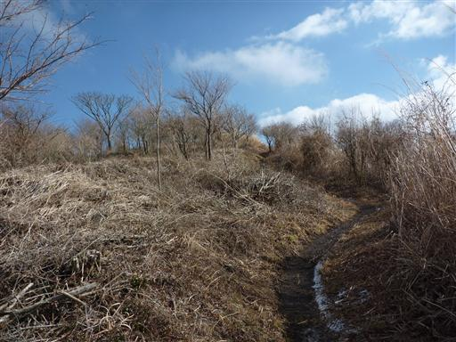
11:51 矢倉岳山頂到着。標高870m。
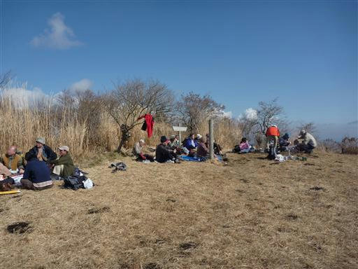
大きく開けていて、相変わらず気持ちの良い山頂だ。思いのほかハイカーの数が多い。
残念ながら富士山の山頂部は雲に隠れてしまった。
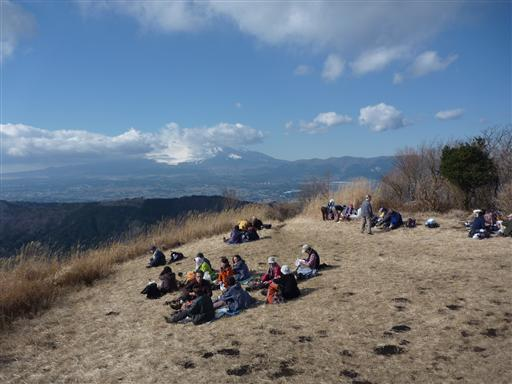
箱根方面の展望。こちらも少し雲がかかっている。
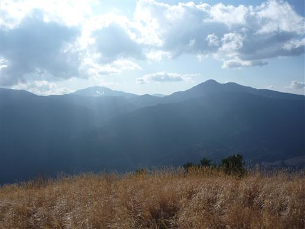
山頂で休憩していると、何名かの大人子供のグループがやってきて凧揚げを始める。
凧揚げ同好会か何かだろうか？
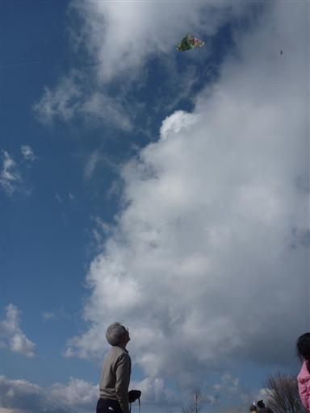
空高く舞い上がる凧。凧揚げを見るなんて久しぶりだ。
山の上でやるという発想はなかったが、電線がなく風もあるため都合が良いのかもしれない。
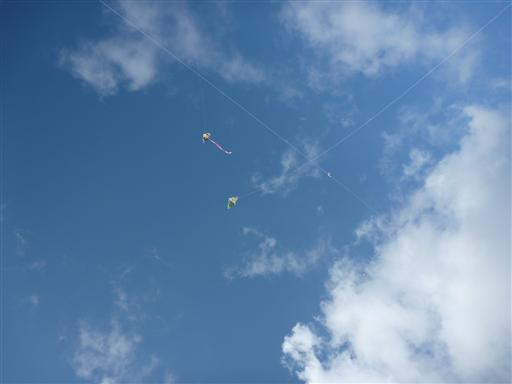
矢倉岳からは山北駅に続くマイナーな登山道を下っていく。
道中に浜居場城跡があるが、城の痕跡は全く見当たらない。
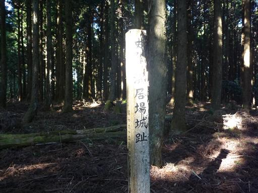
暗い植林地帯の道を下っていくと、突然明るく展望が開ける。
正面に見えるのは大野山。山頂付近に牧場が広がっている山だ。
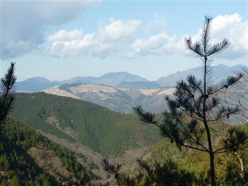
21世紀の森と呼ばれるところに到着する。
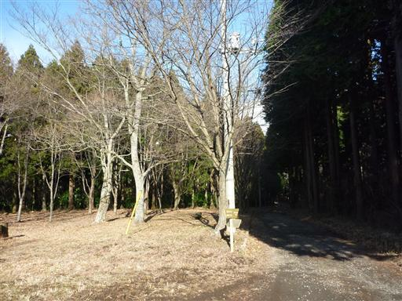
ツルがびっしりと絡み付いている巨木。標識を見ると「エノキ」と書かれている。
えのき茸は良く聞くが、エノキという木の名前は初めて聞いた。
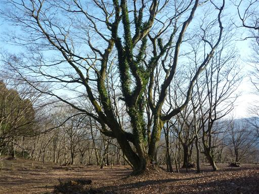
大きな時計台。時計は止まってしまっている。
観光地として整備されているのだが、人影はなく辺りは寂れている。
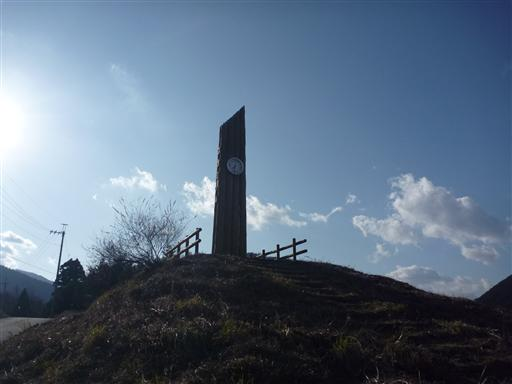
下山地点近くにある洒水の滝に寄って行く。日本百名滝に選ばれている滝だ。
形はシンプルだが落差90mと規模はなかなか大きい。
観光客もちらほらいるが、崩落の危険があり工事中とのことで近づくことはできなかった。
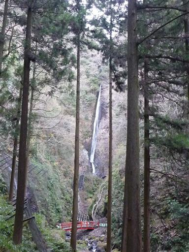